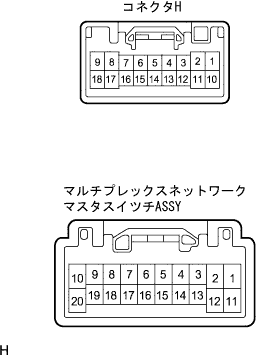
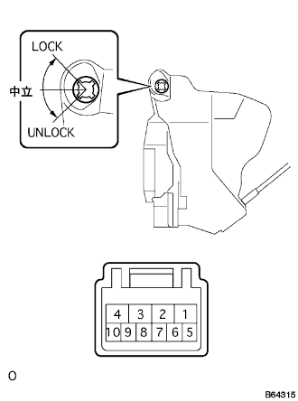
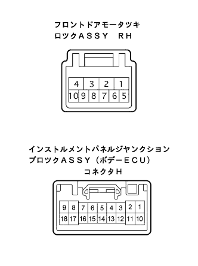

All door locks and unlocks all doors locks by electrical doors Mastus Mastus Mastus Mastus Mastus Mastus Tsutsuchi |
| Step 1 | Operation inspection |
If you can't operate the manual, go to A
If the key interlocking is not possible, go to B
|
| ||||
| A | |
| Step 2 | Multiplex Network Master Switch ASSY Single Inspection |
Disconnect the multiplex network Mastus Mustus Tsutsuchi Assy's connector.
Use SST (Toyota Electrical Tester) to inspect the conduction between each terminal.
| Terminal number | item | Measurement conditions | standard |
|---|---|---|---|
| 4 (L) ← → 2 (E) | Conduction | Door control switch (For manual linkage) Neutral → ON (Lock) | There is an conductor |
| 14 (UL) ← → 2 (E) | Conduction | Door control switch (For manual linkage) Neutral → ON (Unlock) | There is an conductor |
|
| ||||
| OK | |
| Step 3 | Wire harness inspection |
Separate the connector of the body ECU connector H and multiplex network Mastasutsutchi ass.
|  |
Use SST (Toyota Electrical Tester) to inspect the conduction between each terminal connector.
| Terminal number (Body ECU ← → Mastus Tsutsuchi) | standard |
|---|---|
| H4 (L1) ← → 4 (L) | There is an conductor |
| H5 (UL1) ← → 14 (UL) | There is an conductor |
|
| ||||
| OK | ||
| ||
| Step 4 | Front door lock ASSY RH (Motoruki) Single inspection |
Conduct inspection (door control through, key linked)
|  |
Use SST (Toyota Electrical Tester) to check the conduction between each terminal at each position of the Suitsu lever.
| switch | Terminal number | standard |
|---|---|---|
| Lock | 6 terminals ← → 8 terminals | There is an conductor |
| Neutral | - | - |
| Unlock | 5 terminals ← → 8 terminals | There is an conductor |
|
| ||||
| OK | |
| Step 5 | Wire harness inspection |
Separate the connector H of the front door motor Tsukirotsukirotsukirotsuku asy RH and the connector H of the body ECU.
|  |
Use SST (Toyota Electrical Tester) to inspect the conjunction between the vehicle connector and between the body connector and the body earth.
| Terminal number (Door lock ← → Body ECU) | standard |
|---|---|
| 5 (UL) ← → H15 (UL2) | There is an conductor |
| 6 (L) ← → H16 (L2) | There is an conductor |
| 8 (E) ← → Body Earth | There is an conductor |
|
| ||||
| OK | ||
| ||